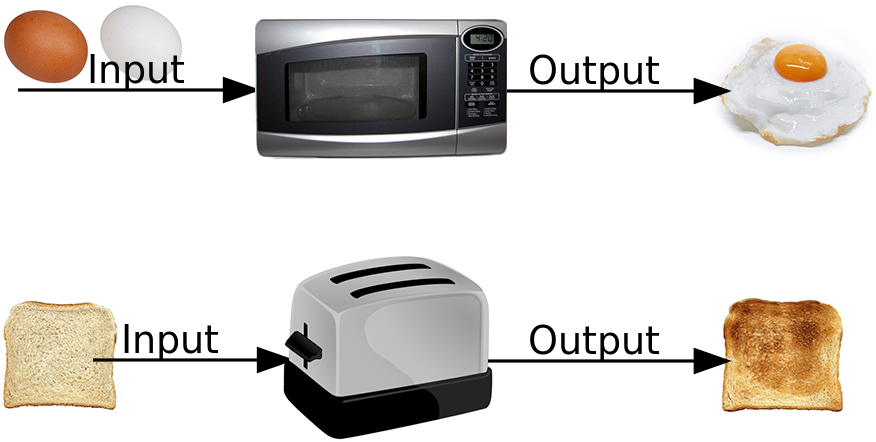
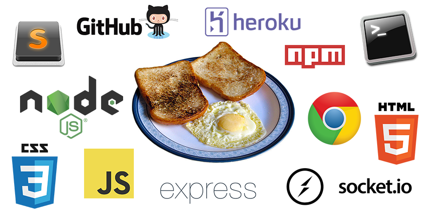
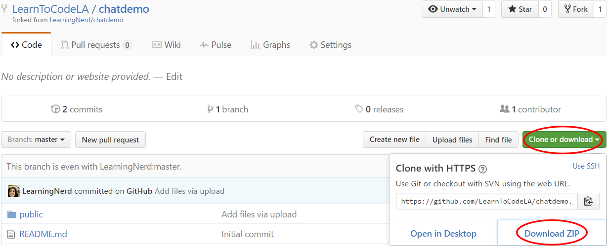
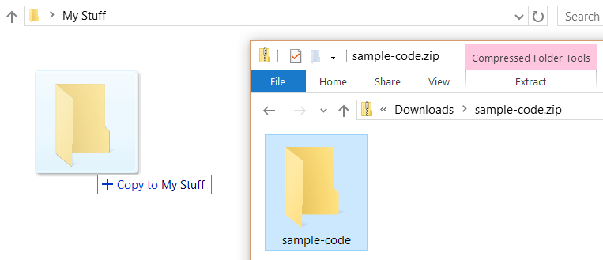
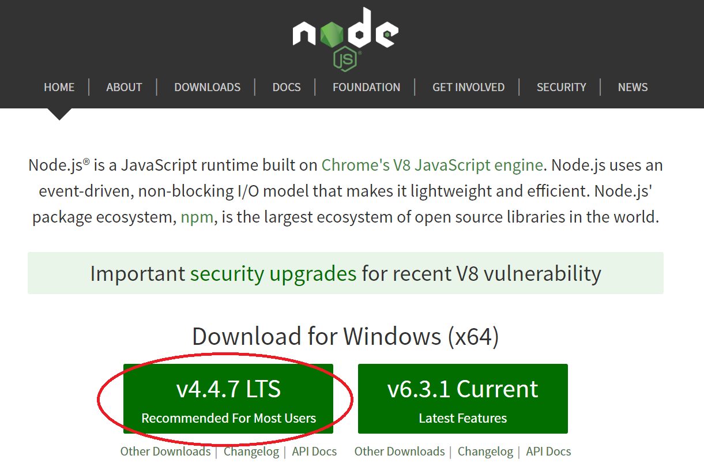
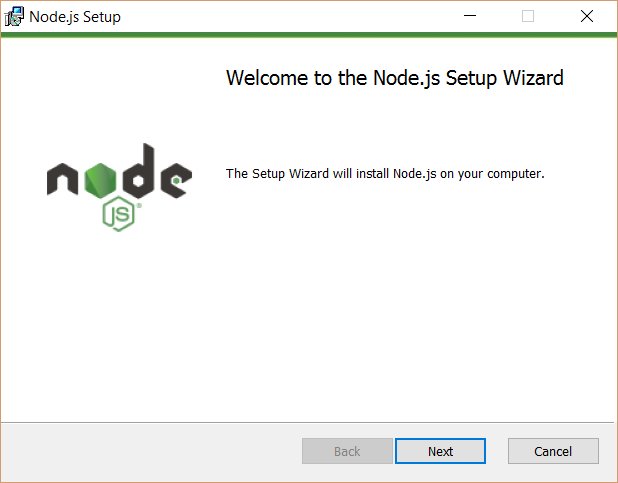
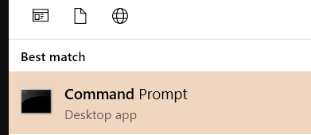
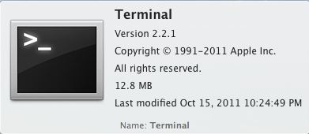
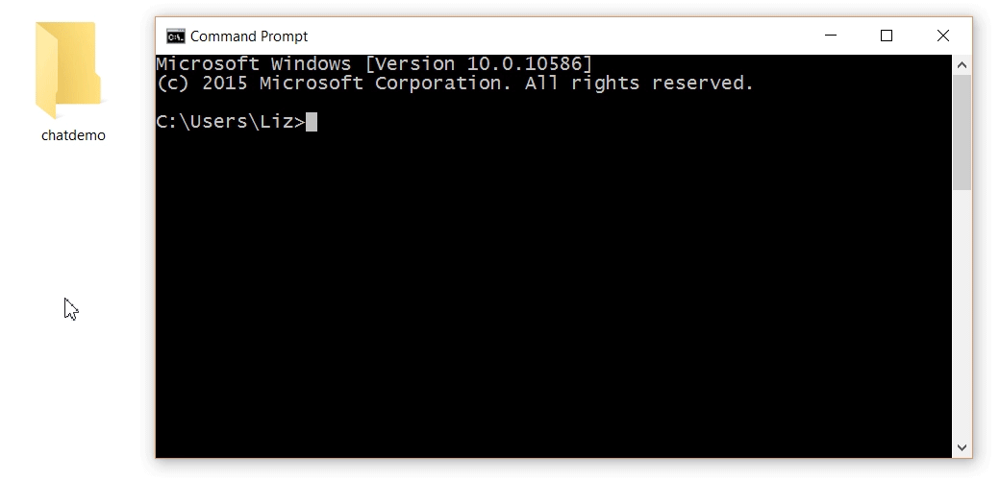

Build Your First Real-Time Interactive Web App
with NodeJS, Express & SocketIO
Learning with Black Boxes
Blackboxing is "the way scientific and technical work is made invisible by its own success.
When a machine runs efficiently, when a matter of fact is settled, one need focus only on its inputs and outputs and not on its internal complexity.
Thus, paradoxically, the more science and technology succeed, the more opaque and obscure they become."
-- Bruno Latour
Anything can be a black box
and they're everywhere!
Photos of bread/toast by Rainer Zenz
{kind=link}
Tools we're using today
Even if you don't completely understand how all these tools work yet, you can still use them to make a delicious breakfast a cool web app!
Delicious breakfast photo by Asimzb on Wikimedia
{kind=link}
Tools we're using today
Languages:
Software Tools:
First things first:
Setup and Installation
Download the sample code
Go to the link below, click the green "Clone or download" button, then click "Download ZIP"
Unzip the project folder
Open up the downloaded .zip file; there will be a folder inside it. Move that folder onto your desktop (or another place where you can find it easily)
Install NodeJS from NodeJS.org
Choose the LTS "Recommended for Most Users" version: 
Then open the installer and follow the instructions. (Just click "Next" a bunch of times and let it do its thing; all the default settings should be fine.)
Time to geek out in the command line!
Windows: Open Command Prompt (you can search for it in the Start menu)
Mac: Open Terminal (you can search for it in Finder or Spotlight)
 To check the version of NodeJS and confirm it installed correctly, type this and hit enter:
node -vNext, let's cd or "Change Directories" to go into our project folder.
Here's a nifty trick: type "cd" followed by a space, and then drag and drop your folder into the command line and hit enter:
Install Express and SocketIO
Next we'll use npm to install the dependencies listed in our package.json file by typing this into the command line:
npm installThis will download a bunch of stuff and create a "node_modules" folder with all the code needed for Express and SocketIO.
Let's take a look at our files
Inside "chatdemo" folder:
- package.json
- app.js
- node_modules/
- public/
- index.html
- local.js
- style.css
package.json
{
"name": "socket-chat-example",
"version": "0.0.1",
"description": "my first socket.io app",
"dependencies": {
"express": "^4.10.2",
"socket.io": "^1.4.8"
},
"engines": {
"node": "4.4.3"
},
"scripts": {
"start": "node app.js"
}
}
app.js
var express = require("express");
var app = express();
var http = require('http').Server(app);
var io = require('socket.io')(http);
var port = process.env.PORT || 8000;
app.use(express.static('public'));
http.listen(port, function(){
console.log('listening on ' + port);
});
io.on('connection', function(socket){
console.log('A user connected!');
socket.on('chat', function(data){
console.log('CHAT: name: '+ data.name + ', message: ' + data.message);
io.emit('chat', data);
});
socket.on('disconnect', function(msg){
console.log('A user disconnected.');
});
});
public/index.html
<!DOCTYPE html>
<html>
<head>
<title>Simple Chat App Demo</title>
<meta charset="utf-8">
<link rel="stylesheet" href="style.css">
</head>
<body>
<div id="chat">
</div>
<div class="interface">
<input id="nameinput" type="text" value="Anonymous" placeholder="Your Name"><input id="messageinput" type="text" placeholder="Write your message here"><button id="send">Send</button>
</div>
<script src="/socket.io/socket.io.js"></script>
<script src="local.js"></script>
</body>
</html>
public/style.css
body {
font-size: 20px;
}
#chat {
margin-bottom: 1em;
}
.message {
padding: 0.5em;
}
.message:nth-child(even) {
background-color: #eee;
}
.message:last-child {
margin-bottom: 3.5em;
}
.username {
font-weight: bold;
}
.interface {
height: 3.5em;
position: fixed;
bottom: 0;
left: 0;
width: 100%;
padding: 10px;
box-sizing: border-box;
background: #fff;
box-shadow: 10px 10px 5px #888888;
}
input, button {
padding: .5em;
box-sizing: border-box;
font-size: 16px;
}
#nameinput {
width: 20%;
}
#messageinput {
width: 60%;
}
#send {
width: 20%;
}
public/local.js
var socket = io();
var sendButton = document.getElementById("send");
var nameInput = document.getElementById("nameinput");
var messageInput = document.getElementById("messageinput");
// if user clicks "Send" button, send message
sendButton.addEventListener("click", sendMessage);
// if ENTER key was pressed, send message
window.addEventListener("keypress", function(event){
if (event.which === 13) {
sendMessage();
}
});
// when "chat" event received, display message
socket.on('chat', function(data){
console.log('RECEIVED: name: '+ data.name + ', message: ' + data.message);
displayNewMessage(data.name, data.message);
});
function sendMessage(event) {
console.log('SENDING: name: '+ nameInput.value + ', message: ' + messageInput.value);
socket.emit('chat', {name: nameInput.value, message: messageInput.value} );
}
function displayNewMessage (username, message) {
var newMessage = document.createElement('div');
newMessage.className = 'message';
var messageTextNode = document.createTextNode(': ' + message);
var newMessageUser = document.createElement('span');
newMessageUser.className = 'username';
newMessageUser.innerText = username;
newMessage.appendChild(newMessageUser);
newMessage.appendChild(messageTextNode);
document.getElementById('chat').appendChild(newMessage);
window.scrollTo(0,document.body.scrollHeight);
}
Boilerplate for NodeJS/Express/Socket.IO
Client
var socket = io();
Server
var express = require("express");
var app = express();
var http = require('http').Server(app);
var io = require('socket.io')(http);
var port = process.env.PORT || 8000;
app.use(express.static('public'));
http.listen(port, function(){
console.log('listening on ' + port);
});
Do stuff when a user connects to server
// Server code (after boilerplate)
io.on('connection', function(socket){
console.log('A user connected!');
});
Do something when a user disconnects from server
// Server code (after boilerplate)
io.on('connection', function(socket){
socket.on('disconnect', function(msg){
console.log('A user disconnected.');
});
});
Do something when server recieves an event/message
// Server code (after boilerplate)
io.on('connection', function(socket){
socket.on('event name here', function(data){
console.log('Message receieved!');
});
});
Sending stuff from client to server
Client
socket.emit('event name here',
'Sending a message! Or JSON data!'
);
Server
// Server code (after boilerplate)
io.on('connection', function(socket){
socket.on('event name here', function(data){
console.log('Message receieved!');
});
});
Sending stuff from server to client(s)
Client
socket.on('event name here ', function(data){
console.log('Message recieved: ' + data);
});
Server
// Server code (after boilerplate)
io.on('connection', function(socket){
// send to ALL clients
io.emit('event name here', 'Hi all!');
});
Let's run our app!
To run our web server and see our app in action, go back to the command line and run this command:
node app.jsThis tells NodeJS to run our "app.js" file, which starts the web server and puts everything into action. If it works, you'll see a message in the command line that it's listening on port 8000.
Open the app in your web browser
To connect to our local web server, open a new tab in your web browser and go to the following URL:
http://localhost:8000And you should see your app! Check the command line; if the connection is working, it will show the message "A user connected!"
Open the same URL in another browser tab and any messages you send will appear in both instances of your app. Cool, huh?
Now let's publish it online with GitHub and Heroku!
The quick and dirty way to upload to GitHub:
- Log into GitHub and go to https://github.com/new
- Name your new repo (the name doesn't matter)
- Check the box next to "Initialize this repository with a README"
- Click the green "Create repository" button


The quick and dirty way to upload to GitHub:
- On your new repository page, click on "Upload Files"

The quick and dirty way to upload to GitHub:
- Drag and drop your project files from your local folder except for the "node_modules" folder, then click the green "Commit changes" button

Now let's publish it live on Heroku:
- Log into Heroku and go to https://dashboard.heroku.com/new
- Give your app a unique name and click "Create App"

Now let's publish it live on Heroku:
- Next to "Deployment Method", click on GitHub

Now let's publish it live on Heroku:
- Click "Connect to GitHub" at the bottom
- Another window will open up; click "Authorize application" to link GitHub to Heroku

Now let's publish it live on Heroku:
- Next to "Connect to GitHub", search for the name of your GitHub respository and then click "Connect" when your repository name appears

Now let's publish it live on Heroku:
- Next to "Automatic Deploys", click "Enable Automatic Deploys" so that any future updates on GitHub will also update your app on Heroku

Now let's publish it live on Heroku:
- Almost done! Next to "Manual Deploy", click "Deploy Branch" to make your app live on Heroku right now

Now let's publish it live on Heroku:
- After a couple minutes, your app should be online! To try it out, click "View App" at the bottom

Congratulations!
Now you can share your first interactive app with the world!
Now let's tinker with it!
Check out more in the SocketIO docs: http://socket.io/docs/